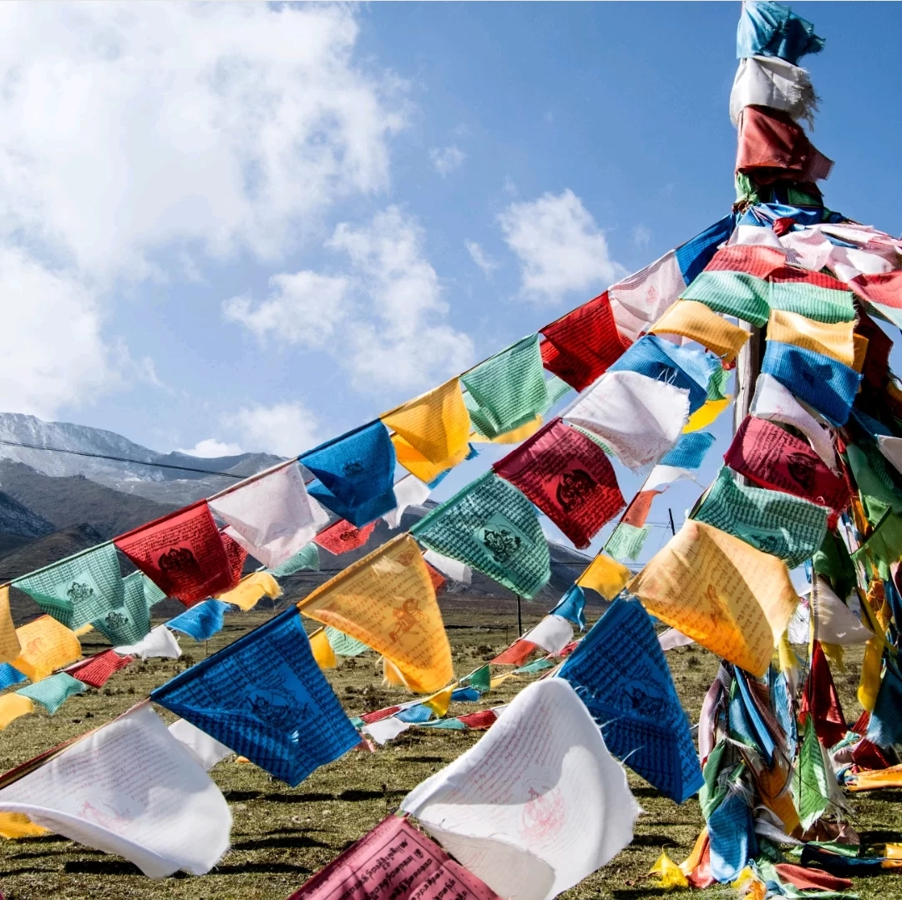

☑藏族节日
雪顿节 每年藏历六月底七月初，“雪顿” 意为酸奶宴。因为雪顿节期间有隆重热烈的藏戏演出和规模盛大的晒佛仪式。千千万万的佛教徒从全世界涌向拉萨，顶礼膜拜朝圣至高无上的佛祖。最隆重的晒佛仪式、最欢腾的藏戏表演。
赛宝会 二月三十日，举行规模十分盛大的“赛宝会”，藏语叫“曲蚌”。上千僧人和官员手持各种宝贝绕过八廓街，然后在布达拉宫前举行各种表演,最后从小昭寺前面返回大昭寺。
燃灯节 每年藏历十月二十五日，是祭奠藏传佛教格鲁派祖师宗喀巴诞辰与圆寂的日子。寺院和俗家屋顶均要点亮无数盏灯，转经队伍川流不息，信徒们纷纷把手持的桑枝投入大昭寺前的香炉，祈祝神佛为自己带来好运。
☑藏族风俗习惯
唐卡是藏族文化中一种独具特色的绘画艺术形式。具有鲜明的民族特点、浓郁的宗教色彩和独特的艺术风格，用明亮的色彩描绘出神圣的佛的世界；颜料传统上是全部采用金、银、珍珠、玛瑙、珊瑚、松石、孔雀石、朱砂等珍贵的矿物宝石和藏红花、大黄、蓝靛等植物为颜料以示其神圣。这些天然原料保证了所绘制的唐卡色泽鲜艳，璀璨夺目，虽经几百年的岁月，仍是色泽艳丽明亮。因此被誉为中国民族绘画艺术的珍品，被称为藏族的”百科全书”
经幡作为福运升腾的象征物每年都要换新。换新的日子不能随意选择，它是根据藏族历算，选择在藏历新年初一过后某一个良辰吉日。这一天早上，全院的人都穿上节日盛装，聚集在楼顶上，举行一次隆重而欢乐的插经幡仪式，藏语里这个仪式称为“托随”，意为祭神祈福仪式。之所以被称作经幡，是因为这些幡上面都印有佛经，在信奉藏传佛教的人们看来，随风而舞的经幡飘动一下，就是诵经一次，在不停地向神传达人的愿望，祈求神的庇佑。
玛尼堆，藏语称“朵帮”，是垒起来的石头之意。在西藏各地的山间、路口、湖边、江畔，几乎都可以看到一座座以石块和石板垒成的祭坛。玛尼堆也被称为“神堆”。这些石块和石板上，大都刻有六字真言、慧眼、神像造像、各种吉祥图案，它们也是藏族民间艺术家的杰作。每逢吉日良辰，人们一边煨桑，一边往玛尼堆上添加石子，并神圣地用额头碰它，口中默诵祈祷词，然后丢向石堆。天长地久，一座座玛尼堆拔地而起，愈垒愈高。
☑温馨小贴士
- ★未经同意不可进入寺庙，在寺庙内不能吸烟、拍照、触碰物品。有些地方不可以逆时针方向行进，有些秘宗的地方禁止妇女进入。
- ☛藏民伸舌头，是表示尊敬而并非嘲笑;双手合十则是一种礼节。
- ★不鼓励游客去看天葬，藏族人尤其是死者家属，不愿过多的人观看，这既是民族习惯也是人之常情。如果您有机会见到，请自重您的言行，不要因为自己的好奇心而冒犯了别人。
- ☛献哈达是对人表示纯洁、诚心、忠诚的意思。我们在西藏旅游中，如果遇到了这种情况，一定要恭敬、虔诚，应该双手捧过，或者双手合十让对方挂在自己的脖子上。
- ★敬酒茶。用青稞酒敬献客人时，客人必先喝三口再一满杯喝干、这是约定俗成的规矩，不然主人就不高兴。